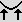
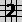

How to create
irrigated terraces with Geomorph
Using the "lift edges" tool and a
"water map"
Geomorph 0.40 provides a "lift edges" tool  which
allows, when used with the terraces tool , the
creation of
terraces looking like those irrigated for agriculture.
We use here the technique of the "water map", also featured in the "Eroded
terrain with river" and in the "Giant Causeway" examples. Two
copies of the same
height field are superimposed with Povray, the first one whose edges
are raised (the "main terrain") and which
has a grass-like
texture, the second one (the "water map") with a water-like
texture and which was
left flat.
A new terraces.pov scene is provided for
this purpose. It takes as input the "water field" previously saved as
hf_water.png and the height
field you are working on, whatever name it
has.
The example shown was created in these steps:
Step 1 - Create a standard
"Subdivision 2" terrain . The example uses a
512x512 map.
Step 2 - Decrease its contrast
by -30 with the "Brightness / contrast" tool  .
Black areas produce edges
looking too high; white areas can produce overflow.
.
Black areas produce edges
looking too high; white areas can produce overflow.
Step 3 - Create the terraces . 6
levels where used in the example, with
a smoothing radius of 2 and an artifact removal radius of 12 pixels.
"Removing the artifacts" means removing the peaks which appear too
narrow, at the higher level.
Step 4 - Clone the terrain
using "Copy under a new name" in the menu bar, name the clone hf_water.png.
in the menu bar, name the clone hf_water.png.
Step 5 - Crest the water map
using the "Crests" tool  with the default parameter of 3
steps, so
that the water map does not "stick out" under the terraces.
with the default parameter of 3
steps, so
that the water map does not "stick out" under the terraces.
Step 6 - Raise the edges of the
terraces with the "Lift edges" tool . Here the default radius of 20
was used, with a level of 15.
Step 7 - You may smooth the
terraces with the "Smooth" tool  , depending on the look you want.
Here a smoothing radius of 4 was used.
, depending on the look you want.
Here a smoothing radius of 4 was used.
Step 8 - Render with terraces.pov.
Like in the 2 other tutorials
featuring water maps, the X and Z scales in the terraces.pov scene file can be stretched to
improve the result. Here, a scaling factor of 1.7x was used.
___________________
Written in January 2007
 Back to the
documentation index
Back to the
documentation index
Contact:
Patrice St-Gelais